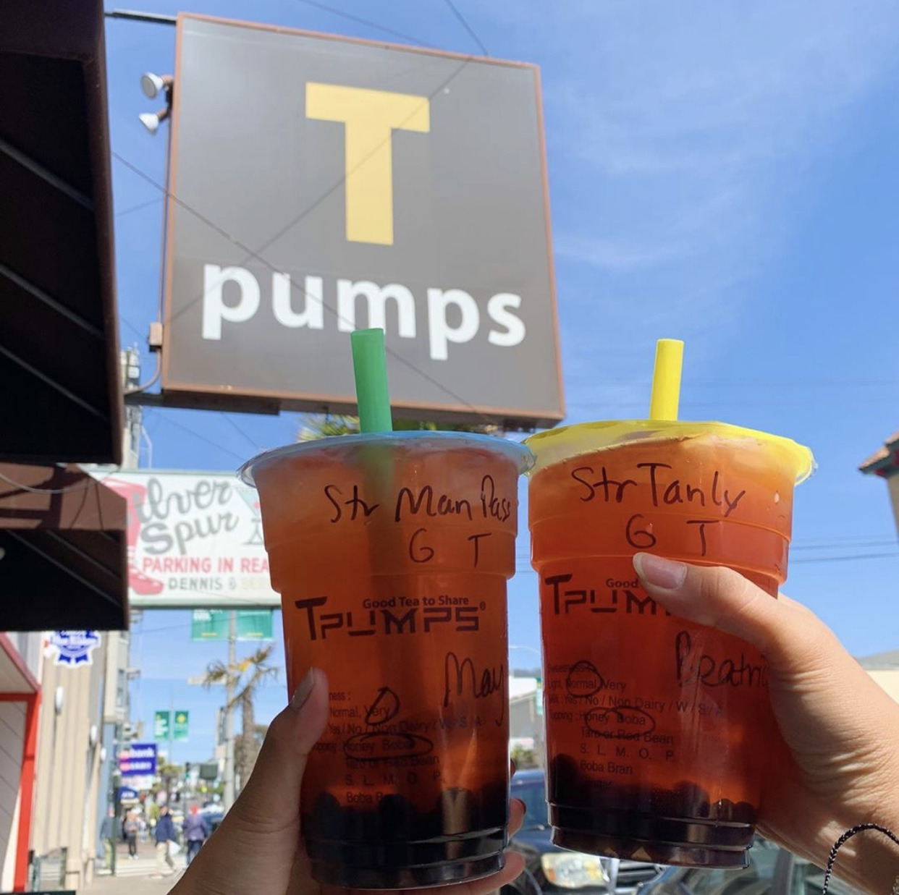
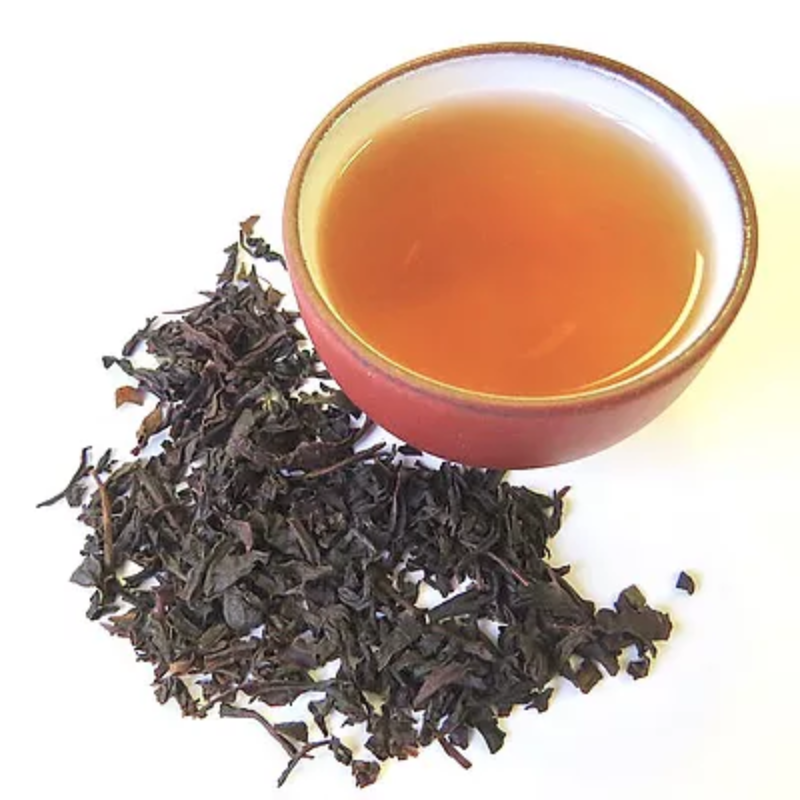
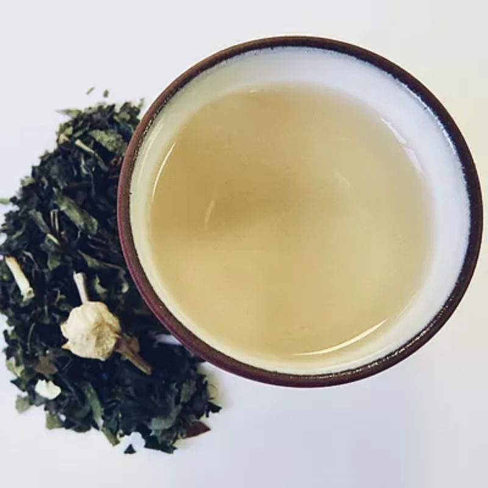
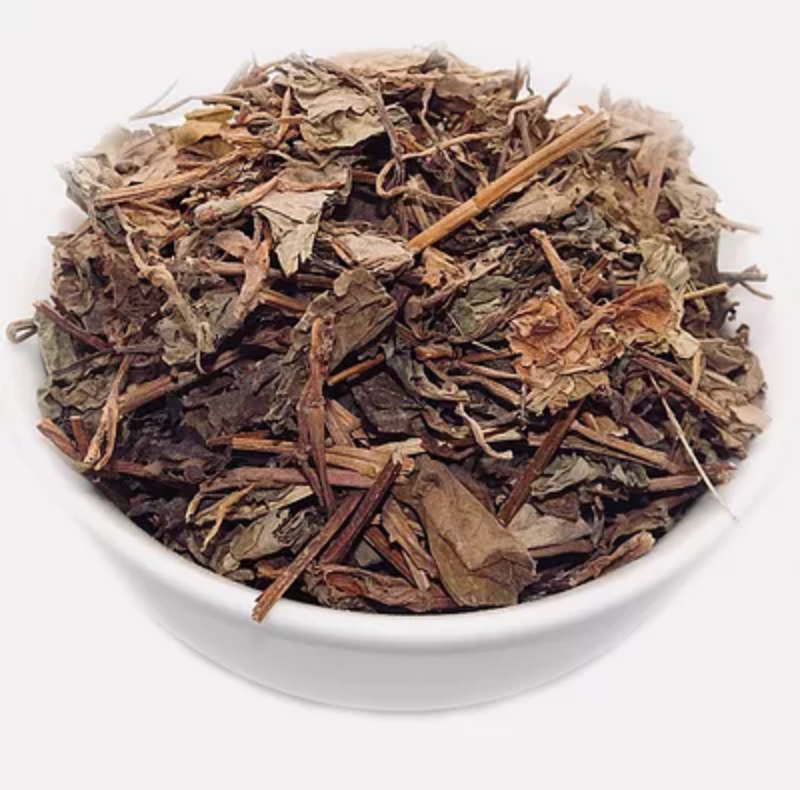
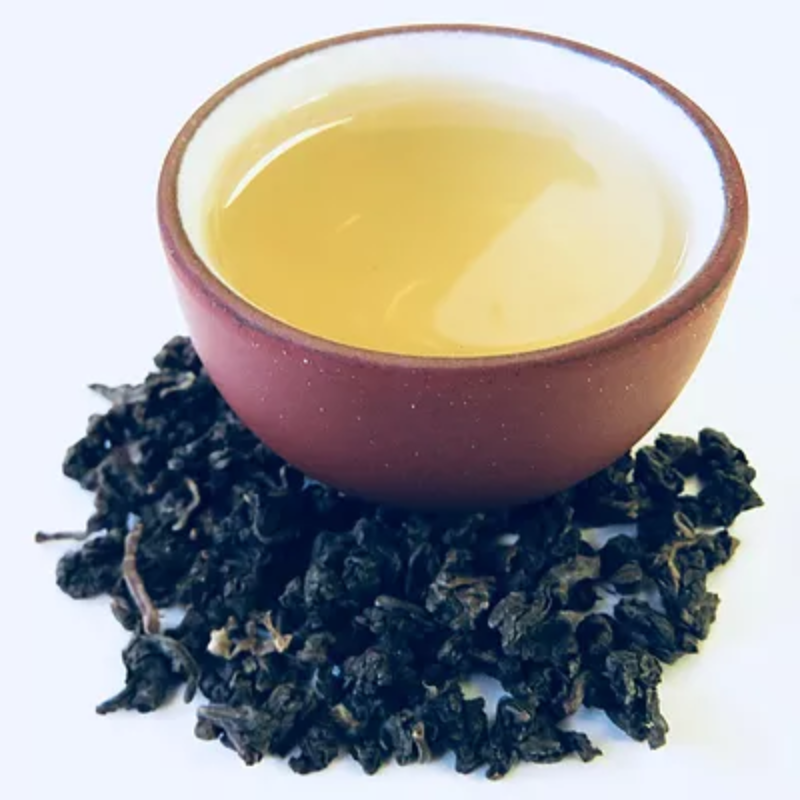
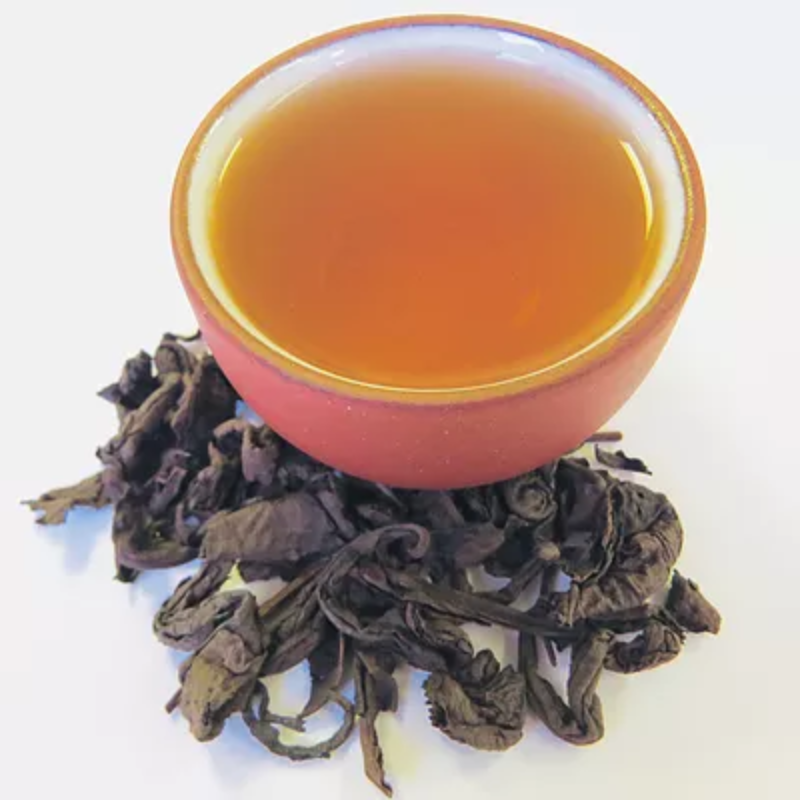
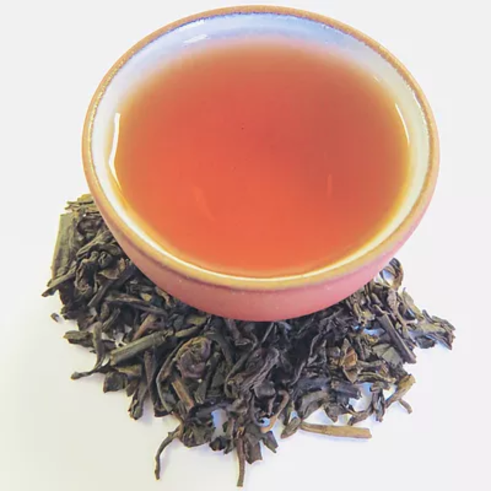

At Tpumps, we use loose leaf teas to brew all of our premium high quality teas. We brew our tea fresh daily - controlling the time and temperature to ensure the freshest, best quality tea experience for our Tpumps fans.
Tpumps was established in 2012 and our first location was in the Sunset District of San Francisco. With our successful business, we have expanded to 7 locations - San Francisco, Burlingame, Foster City, Cupertino, San Jose, Pasadena, and Upland.
Our Premium Teas:

Premium Black Tea: Tpumps has selected a heavy roasted, bold, rich Black Tea that is higher in caffeine than our Jasmine Green Tea. Our Black Tea is unlike any other black teas in tea bags, which tend to have a dry aftertaste and require milk to balance the tartness.

Premium Jasmine Tea:
Tpumps uses a jasmine green tea that is lightly roasted and has a prominent jasmine flower aroma. It is high in caffeine and leaves a nice, natural sweet aftertaste.

Non-Caffeinated Tea:
Tpumps also offers a non-caffeinated herbal tea beverage for those who do not need extra caffeine, but still love to enjoy the Tpumps option of mixing and matching flavors.
Our Signature Teas:

Oolong Tea:
With a fresh and leafy taste, this tea is lightly roasted with a mild, buttery, and nutty flavor. It is high in caffeine, and leaves you with a pleasant, natural, and sweet aftertaste.

Ti Kwan Yin Tea:
Heavy roast green tea that is low in caffeine and has a rich, toasted, honey glazed, sweet aroma, similar to creme brulee. It has a significantly darker color compared to our Oolong Tea and is very smooth with a slightly sweet aftertaste.

Pu-Erh Tea:
Heavy roast black tea - the darkest in color compared to our other signature teas. It is very low in caffeine and has a vintage aroma and taste. Pu-Erh Tea is a microbially fermented tea with a long storage life, similar to red wine.